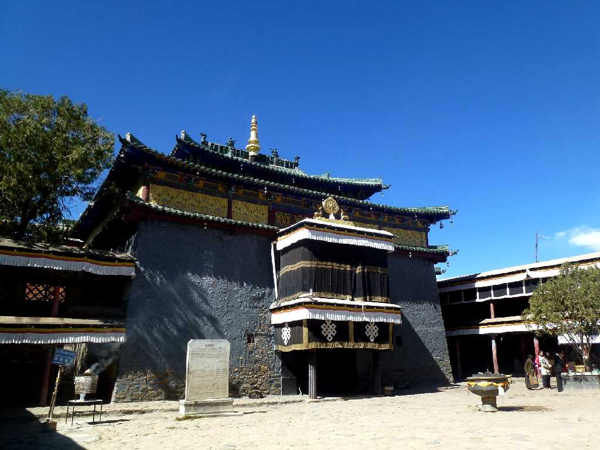
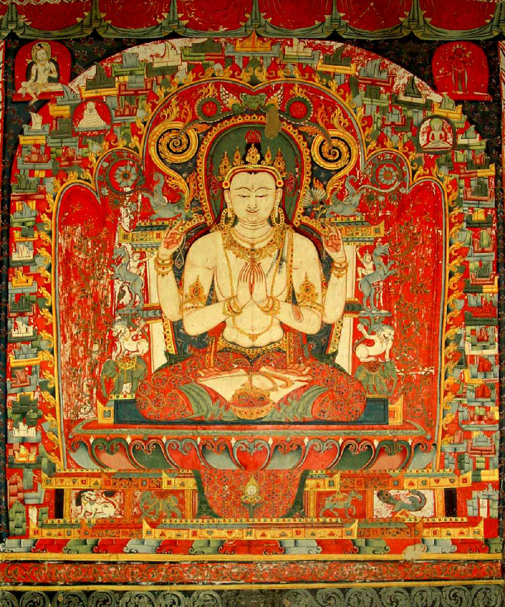
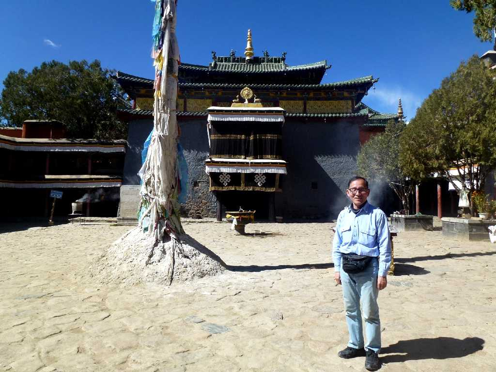

Shalu Monastery Shigatse Tibet 西藏 日喀则 夏鲁寺
１０８７年に創られたシャル派の総本山シャル寺

Mural Painting Shalu Monastery 夏鲁寺 壁画
１３世紀にネパールから絵師が招かれ美術面ではネパール様式と建築面では中国様式となりその後のチベット仏教建築に大きな影響を与えた

October 23 2014 Shalu Monastery